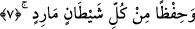
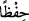
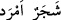
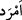
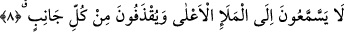
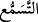
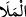
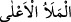

7. Ve (gökyüzünü) itaat dışına çıkan her şeytandan koruduk.
“Ve (gökyüzünü) itaat dışına çıkan” ve hayırdan uzak olan “her şeytandan
koruduk.”
“__WORD__ kelimesi mânâ bakımından ziynet kelimesine atfedilmesi sebebiyle mensuptur.
Sanki “biz yıldızları göğün süsü olarak yarattık ve parlak ışıklar atarak göğü koruduk”
buyrulmuştur.
“itaat dışına çıkan” Araplar yapraksız ağaca “__WORD__ derler. Saçsız sakalsız
kimseye de “__WORD__ denilmesi de bu cümledendir.
et-Te’vîlâtü’n-Necmiyye’de der ki: Allah Teâlâ “Biz yakın göğü, bir süsle,
yıldızlarla süsledik” âyetiyle başa işaret etmektedir. Zira baş bedene nispetle gök
gibidir. Havas, yani duyu organları yıldızlarının ziynetleriyle süslenmiştir. Aynı şekilde
Allah Teâlâ dünya semasını da yıldızlarla süslemiştir. Yine dostlarının gönüllerini
mârifet ve hal yıldızlarıyla süslemiştir. Yıldızların şeytanları kovmasıyla gökleri
koruduğu gibi gönülleri de tevhid nurlarıyla süslemiştir. İşte şeytanlar Allah dostlarının
gönüllerine yaklaştıkları zaman onlar mârifet nurlarıyla şeytanları kovarlar. Allah Teâlâ
şöyle buyuruyor: “Ve (gökyüzünü) itaat dışına çıkan her şeytandan koruduk” yani ins
şeytanlarından onları koruduk demektir.
Hikaye edildiğine göre Ebû Saîd el-Harrâz (k.s.) rüyasında iblisi görmüş ve
değnekle ona vurmak istemiş; iblis ona: “Ey Ebû Said ben değnekten korkmam! Ben
ancak mârifet güneşinin parıltılarından korkarım.” demiştir.
Ehl-i irfânın nuru, nârî/ateşe mensub olan şeytanı yakar.
8. Onlar, artık mele-i a’lâ’ya (yüce topluluğa) kulak veremezler. Her taraftan
taşlanırlar.
“Onlar, artık mele-i a’lâ’ya (yüce topluluğa) kulak veremezler.”
“__WORD__ dinlemeyi talep etmektir. “__WORD__ aynı görüş üzere toplanan topluluk demektir.
Bunlar, tatlı ve kandırıcı su ile göz ve gözeleri, heybet ve azamet ile de gönülleri
doldururlar. “__WORD__ ifadesi melekler, meleklerin en faziletlileri yahut yazıcı
melekler demektir. Melekler yüce semalarda iskan ettikleri için yücelikle
nitelendirilmişlerdir. Fakat onların mertebesi yüce olmakla birlikte en yüce mertebe
değildir. Zira en yüce mertebe “İnsan-ı kâmil” mertebesidir. Genel olarak insanlar ve